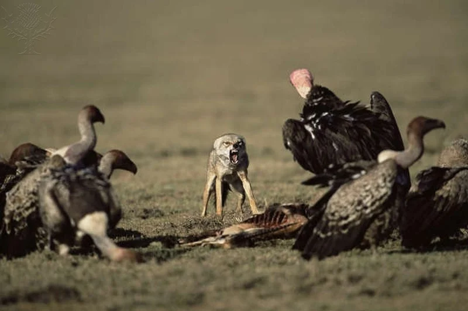

Relações ecológicas são as interações que ocorrem entre os seres vivos. Essas relações podem ocorrer entre indivíduos de uma mesma espécie ou de espécies diferentes e podem ser classificadas como harmônicas e desarmônicas, dependendo das consequências que elas trazem aos envolvidos.
Relações Ecológicas


Como dito, as relações ecológicas são interações que ocorrem entre os seres vivos. Elas podem ocorrer entre indivíduos de uma mesma espécie, sendo classificadas como relações intraespecíficas, ou de espécies diferentes, como relações interespecíficas. Além dessa classificação, as relações ecológicas podem ser tidas como harmônicas ou desarmônicas.
Relações harmônicas: quando traz benefícios a todos os envolvidos, ou traz benefício a um, mas sem causar prejuízo ao outro organismo envolvido na relação; é também conhecida como positiva.
Relações desarmônicas: quando causa algum prejuízo para algum dos envolvidos; é também conhecida como negativa.
Procure os próximos posts para mais informações sobre as classificações!